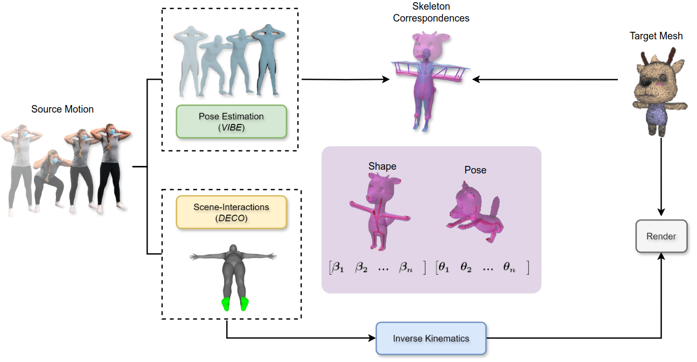
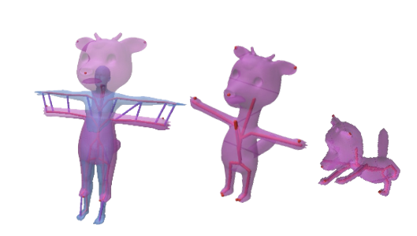
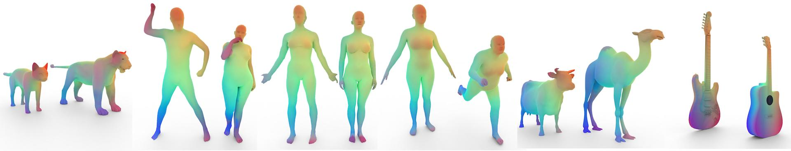
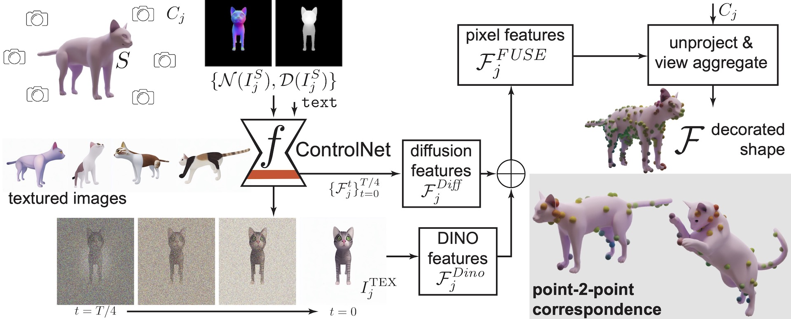
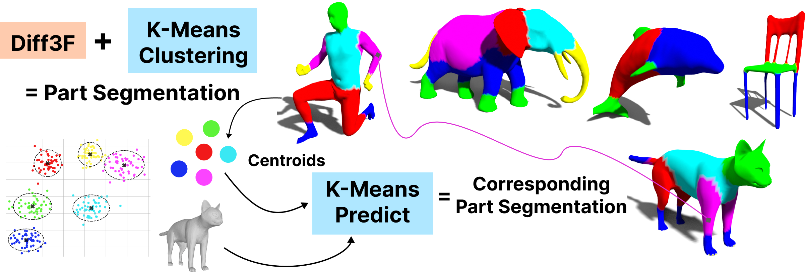
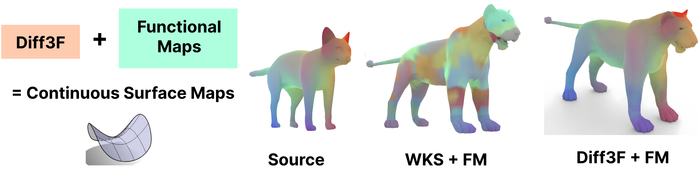
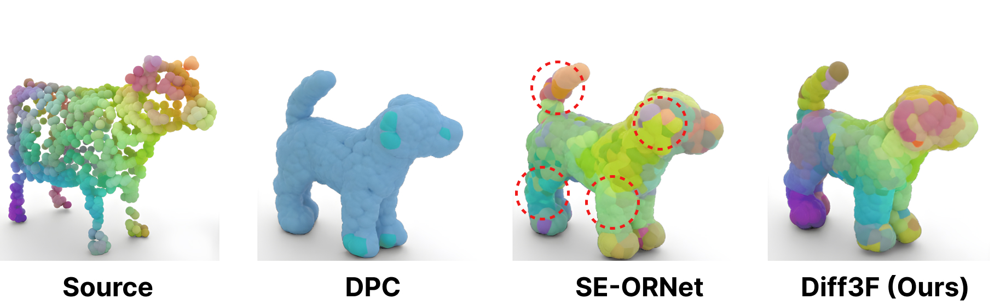
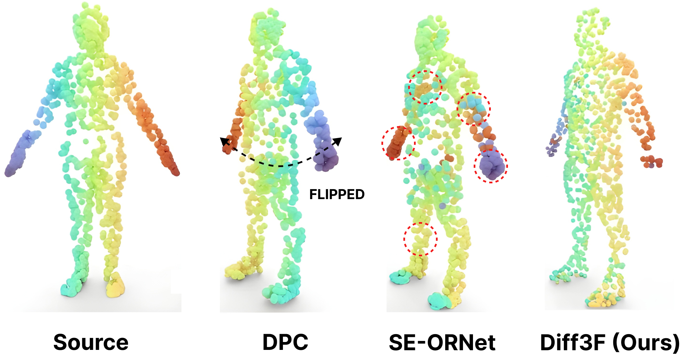

An overview of the Pipeline, showcasing different modules for handling different
aspects of the Retargeting, aiming for producing a realistic motion.
Abstract
We present a pipeline to retarget motion from RGB/D videos to RaBit, which is a first large-scale parametric model of 3D biped cartoon characters. We also propose our own dataset, which contains human-like motion on a wide variety of topologically-consistent biped characters.
Pose (θ) and shape (β) are estimated using state-of-the-art SMPL based body model estimation methods, we have also used methods for estimating and using the scene-contact information for better understanding of the semantics of the input. Once the mesh is obtained, we establish joint correspondences for RaBit to SMPL and then the distance between the corresponding joints are minimized using a loss function.
Inverse Kinematics is then performed using the rotation information from the SOTA pose estimation method,
the final retargeted mesh is then re-rendered with some interactive/interesting scene using Stable Diffusion variants.
3DMP Summary

We decorate 3D points of a given shape in any modality- point clouds or meshes, with rich semantic descriptors. Given the scarcity of 3D geometry data from which to learn these meaningful descriptors, we leverage foundational vision models trained on very large datasets to obtain these features. This enables Diff3F to produce semantic descriptors in a zero-shot way.
Key features:


Semantic Understanding
We showcase heatmaps for visualization of our semantic descriptors. For a query point in the source (denoted by a red ball), we see sematically related points being highlighted in the target. The highest similarity point in the target is indicated by a red ball.
Source

Zero-Shot Part segmentation
K-means clustering can be directly applied to our Diff3F descriptors to extract part segments. Interestingly, we discover that the k-means
centroids, extracted from one shape (e.g., human), can be used to segment another (e.g., cat), thanks to the semantic nature of our descriptors. This leads to
corresponding part segmentation (arms of the human map to front legs of the cat, head maps to head, etc.) as seen in the figure below.

Regularizing Point-to-Point Maps
Diff3F descriptors can be effortlessly plugged into existing geometry processing pipelines such as Functional Maps. We compare the effectiveness of vanilla functional maps [5] with the Wave Kernel Signature as descriptors [6] vs our descriptors Diff3F. Ours being semantic enables Functional Maps to work with non-isometric deformations even though FMs typically struggle with such cases when using traditional geometric descriptors.
Our descriptors yield accurate correspondence in most cases, thus eliminating the need for further refinement algorithms typically used in related works.

Comparison to Prior Works


We compare our Diff3F against SOTA methods (i.e., DPC and SE-ORNet) for the task of point-to-point shape correspondence.
Corresponding points are similarly colored. We show results with mesh rendering for the animal pair (top) and results using point cloud rendering of our method for the human pair (bottom).
While DPC and SE-ORNet both get confused by the different alignments of the human pair resulting in a laterally flipped prediction, ours, being a multi-view rendering-based method, it is robust to rotation.
Evaluation Comparison
We report correspondence accuracy within 1% error tolerance, with our method against competing works. The Laplace Beltrami Operator~(LBO) computation for Functional Maps[5] is unstable on TOSCA [7] since the inputs contain non-manifold meshes.
By ‘*’ we denote results reported by SE-ORNet [3].
Method →
Dataset ↓ |
DPC [2] |
SE-ORNet [3] |
3DCODED [4] |
FM [5]+WKS [6] |
Diff3F (ours) |
Diff3F (ours)+FM[5] |
| acc ↑ |
err ↓ |
acc ↑ |
err ↓ |
acc ↑ |
err ↓ |
acc ↑ |
err ↓ |
acc ↑ |
err ↓ |
acc ↑ |
err ↓ |
| TOSCA [7] |
30.79 |
3.74 |
33.25 |
4.32 |
0.5* |
19.2* |
✘ |
20.27 |
5.69 |
✘ |
| SHREC'19 [8] |
17.40 |
6.26 |
21.41 |
4.56 |
2.10 |
8.10 |
4.37 |
3.26 |
26.41 |
1.69 |
21.55 |
1.49 |
| SHREC'20 [9] |
31.08 |
2.13 |
31.70 |
1.00 |
✘ |
4.13 |
7.29 |
72.60 |
0.93 |
62.34 |
0.71 |
Generalization
We compare generalization capabilities of Diff3F vs others, by training on one dataset and testing on a different set.
For DPC and SE-ORNet, we choose SURREAL and SMAL as the training sets for human and animal shapes respectively as these datasets are significantly larger and lead to improved generalization scores.
By '*' we denote results reported by SE-ORNet [3]. Ours sees significantly higher scores for generalization.
| Train |
Method |
TOSCA [7] |
SHREC'19 [8] |
SHREC'20 [9] |
| acc ↑ |
err ↓ |
acc ↑ |
err ↓ |
acc ↑ |
err ↓ |
| SURREAL |
DPC [2] |
29.30 |
5.25 |
17.40 |
6.26 |
31.08 |
2.13 |
| SE-ORNET [3] |
16.71 |
9.19 |
21.41 |
4.56 |
31.70 |
1.00 |
| SMAL |
DPC [2] |
30.28 |
6.43 |
12.34 |
8.01 |
24.5* |
7.5* |
| SE-ORNET [3] |
31.59 |
4.76 |
12.49 |
9.87 |
25.4* |
2.9* |
| Pretrained |
Diff3F |
20.27 |
5.69 |
26.41 |
1.69 |
72.60 |
0.93 |
References
[1] Daniela Giorgi, Silvia Biasotti, and Laura Paraboschi. Shape077
retrieval contest 2007: Watertight models track. SHREC competition, 8(7):7, 2007.
[2] Itai Lang, Dvir Ginzburg, Shai Avidan, and Dan Raviv. Dpc: Unsupervised deep point correspondence via cross and self construction. In 2021 International Conference on 3D Vision (3DV), pages 1442–1451. IEEE, 2021.
[3] Jiacheng Deng, Chuxin Wang, Jiahao Lu, Jianfeng He, Tianzhu Zhang, Jiyang Yu, and Zhe Zhang. Se-ornet: Self- ensembling orientation-aware network for unsupervised point cloud shape correspondence. In Proceedings of the IEEE/CVF Conference on Computer Vision and Pattern Recognition, pages 5364–5373, 2023.
[4] Thibault Groueix, Matthew Fisher, Vladimir G Kim, Bryan C Russell, and Mathieu Aubry. 3d-coded: 3d correspondences by deep deformation. In Proceedings of the european conference on computer vision (ECCV), pages 230–246, 2018.
[5] Maks Ovsjanikov, Mirela Ben-Chen, Justin Solomon, Adrian Butscher, and Leonidas Guibas. Functional maps: a flexible representation of maps between shapes. ACM Transactions on Graphics (ToG), 31(4):1–11, 2012.
[6] Mathieu Aubry, Ulrich Schlickewei, and Daniel Cremers. The wave kernel signature: A quantum mechanical approach to shape analysis. In 2011 IEEE international conference on computer vision workshops (ICCV workshops), pages 1626– 1633. IEEE, 2011.
[7] Alexander M Bronstein, Michael M Bronstein, and Ron Kimmel. Numerical geometry of non-rigid shapes. Springer Science & Business Media, 2008.
[8] Simone Melzi, Riccardo Marin, Emanuele Rodola`, Umberto Castellani, Jing Ren, Adrien Poulenard, Peter Wonka, and Maks Ovsjanikov. Shrec 2019: Matching humans with different connectivity. In Eurographics Workshop on 3D Object Retrieval, page 3. The Eurographics Association, 2019.
[9] Roberto M Dyke, Yu-Kun Lai, Paul L Rosin, Stefano Zappala`, Seana Dykes, Daoliang Guo, Kun Li, Riccardo Marin, Simone Melzi, and Jingyu Yang. Shrec’20: Shape correspondence with non-isometric deformations. Computers & Graphics, 92:28–43, 2020.
BibTeX
@InProceedings{Dutt_2024_CVPR,
author = {Dutt, Niladri Shekhar and Muralikrishnan, Sanjeev and Mitra, Niloy J.},
title = {Diffusion 3D Features (Diff3F): Decorating Untextured Shapes with Distilled Semantic Features},
booktitle = {Proceedings of the IEEE/CVF Conference on Computer Vision and Pattern Recognition (CVPR)},
month = {June},
year = {2024},
pages = {4494-4504}
}